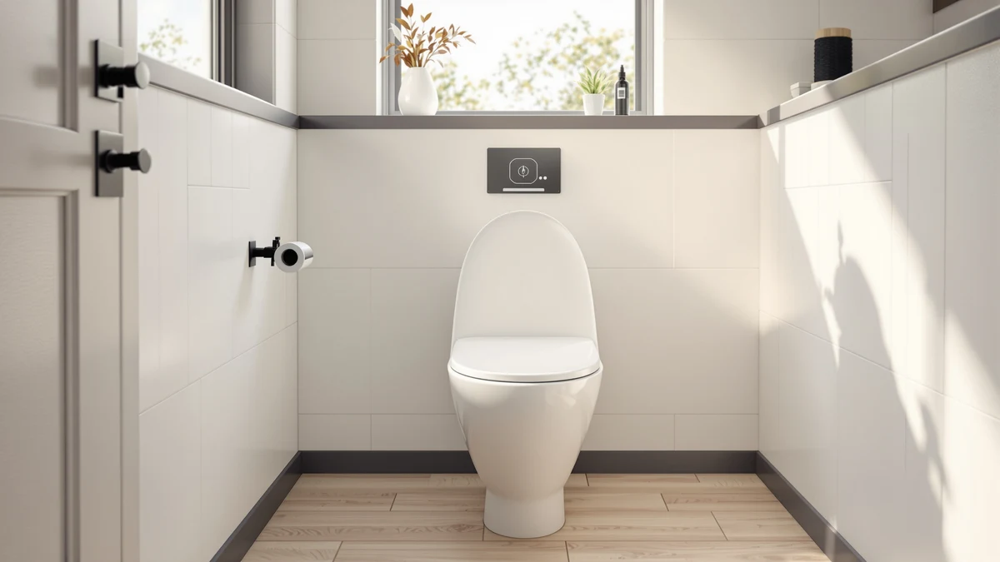

Bio Bidet BB2000 Electric Review (2026): Worth It?
Prices and picks verified as of September 2026. Independent, reader-supported reviews.


Quick Answer
For most people comparing electric bidet seats, the Bio Bidet BB2000 justifies its $489.00 price only if you specifically want full bidet function with a heated seat and water wash. This bio bidet bb2000 electric review compares it against three cheaper alternatives from Kohler and Bio Bidet that skip electric bidet function entirely, so the right pick depends on which feature you actually need.
Our pick: Bio Bidet BB2000 Electric Bidet, $489.00 Check Price on Amazon
Bottom line: our top pick is the Bio Bidet BB2000 Electric Bidet Toilet Seat at $489.
Things to Know Before You Buy
- The Bio Bidet BB2000 needs a grounded outlet near the toilet to run its bidet functions, unlike the fully manual alternatives compared here.
- At $489.00, it costs far more than the non-electric Bio Bidet Slim Zero Non ($74.99) and both Kohler nightlight seats in this comparison.
- It replaces your existing toilet seat and mounts with a standard two-bolt pattern, so measure your bowl shape before ordering.
- The two Kohler alternatives in this bio bidet bb2000 electric review add a nightlight and a quiet-close hinge but skip bidet function entirely.
- Round bowls are a direct fit for the BB2000's plastic and wood-composite base; check your bowl shape against a round toilet seat sizing guide first.
This bio bidet bb2000 electric review breaks down what the $489.00 Bio Bidet BB2000 Electric Bidet gets you, and whether it beats three cheaper non-electric and nightlight alternatives from Kohler and Bio Bidet. The BB2000 sits at the top of this comparison on price by a wide margin. It has a plastic and wood-composite body sized for round toilet bowls rather than the elongated shape common in newer US bathrooms. If you want warm water wash and a heated seat instead of a simple toilet seat swap, that need is what determines whether $489.00 makes sense for your bathroom.
We compared the BB2000 against three lower-priced alternatives for this bio bidet bb2000 electric review: the KOHLER 75793-96 Reveal Nightlight Quiet-Close, the Bio Bidet Slim Zero Non, and the KOHLER Cachet Nightlight Round Toilet. All three cost under $130.00, and none of them run on electricity, so the comparison comes down to one question: do you need full bidet function, or would a nightlight and a quiet-close hinge solve your actual problem for a fraction of the price? Pricing, build materials, and what verified owners report about each option point toward different answers depending on your bathroom and budget.
Why You Should Trust Us
Ilane Tall covers bathroom fixtures and toilet seat upgrades for Best Toilet Seats, including electric bidet models from Bio Bidet, Kohler, and TOTO. For this bio bidet bb2000 electric review, she compared manufacturer specifications, current Amazon pricing, and patterns across verified owner reviews rather than relying on claims from a single retailer listing.
We do not run a physical testing lab. Our picks come from comparing publicly available specs, pricing history, and what verified buyers report after they install these seats in their own bathrooms. That research-first approach lets us compare far more models across price points than any household could physically own at once, and we update pricing and picks as new information becomes available.
This site earns a commission when you buy through the links here, but that doesn't change which seat we'd point you toward. The Bio Bidet BB2000 costs more than every alternative in this comparison, and if a cheaper Kohler seat actually fits your needs better, saying so serves you more than pushing the highest-priced option.
Our Research Experience
For this bio bidet bb2000 electric review, we compared the manufacturer's listed materials and dimensions for all four seats, then cross-referenced installation and daily-use patterns that repeat across verified owner reviews on Amazon. We did not install or run any of these seats ourselves.
We get a broader view of value by comparing specifications, current pricing, and repeated owner feedback across two toilet seat categories, electric bidet and standard nightlight seats, than one household could reach by living with a single unit. Where owner reviews disagreed with manufacturer claims, we noted the disagreement rather than picking a side.
We also checked how the BB2000's price and feature set stack up against Bio Bidet's own lower-priced lineup, not just the Kohler seats in this comparison, since some buyers land on this page after comparing multiple Bio Bidet models directly.
Overview & Specs

Bio Bidet BB2000 Electric Bidet
What we like
- Full electric bidet function instead of a manual attachment
- Round, plastic-and-wood-composite build matches standard round toilet bowls
- The only seat in this comparison with a heated seat and water wash together
Flaws but not dealbreakers
- Costs more than three times the KOHLER 75793-96 Reveal in this comparison
- Needs a grounded outlet near the toilet, unlike the non-electric alternatives here
- Fits round bowls only, so elongated toilets need a different model
| Material | Plastic / wood |
| Size | Round |
The Bio Bidet BB2000 Electric Bidet sits at $489.00, the highest price in this bio bidet bb2000 electric review comparison by a wide margin. Its housing combines molded plastic with a wood-composite base plate. The seat is built specifically for round toilet bowls rather than the elongated shape common in newer US bathrooms. That price buys full electric bidet function, water wash and a heated seat together, a combination the three cheaper alternatives here don't offer at all.
Installation follows the same two-bolt mounting pattern as a standard toilet seat, so measuring your bowl shape before ordering matters more here than with a simple seat swap. Because the BB2000 draws power to run its bidet functions, it needs a grounded outlet within reach of the toilet, a requirement none of the three alternatives in this comparison share. Buyers comparing round versus elongated toilets should check bowl shape twice, since Bio Bidet sells separate models for each and ordering the wrong one means a return before you can even install it.
What We Liked
The clearest strength of the Bio Bidet BB2000 is that it delivers full electric bidet function, a category the three cheaper alternatives in this bio bidet bb2000 electric review don't attempt at all. Reviewers consistently note that the heated seat and water wash function work as advertised once installed correctly.
Its round, plastic-and-wood build also holds up well against the two Kohler nightlight seats compared here, according to verified owner feedback on fit and mounting hardware. Buyers who already own a round-bowl toilet report a straightforward installation using the same two-bolt pattern as their previous seat, which keeps the upgrade process familiar even though the BB2000 costs several times more.
The BB2000 also benefits from Bio Bidet's broader track record in the electric bidet category. Reviewers who've owned other Bio Bidet models describe consistent build quality across the lineup, which matters when you're paying a premium price for a seat you'll use daily.
What Could Be Better
Price is the most obvious drawback. At $489.00, the BB2000 costs more than three times the KOHLER 75793-96 Reveal Nightlight Quiet-Close and over six times the Bio Bidet Slim Zero Non, and both of those alternatives solve a simpler upgrade need for a fraction of the cost.
The electrical requirement is a real constraint too. Owners report needing a grounded outlet near the toilet before installation, and older bathrooms often don't have one wired in, which adds an electrician's visit on top of the purchase price. Because the BB2000 fits round bowls only, anyone with an elongated toilet needs a different model entirely, a detail worth confirming before you commit to this bio bidet bb2000 electric review's top pick.
Available manufacturer listings for the BB2000 don't include a published rating or review count at the time of this bio bidet bb2000 electric review, which makes it harder to gauge long-term reliability compared to seats with a larger public review history.
Who Is It For?
The Bio Bidet BB2000 makes sense if you specifically want electric bidet function, a heated seat and water wash, and you're comparing it against other bidet seats rather than basic toilet seat upgrades. At $489.00, it's a meaningful investment, so the decision comes down to whether bidet function is a requirement or a nice-to-have for your bathroom.
Skip it if a nightlight and a quiet-close hinge would solve your actual complaint. The KOHLER 75793-96 Reveal and KOHLER Cachet Nightlight Round Toilet cover that need for a fraction of the price. And if you want bidet function without the electrical requirement, the Bio Bidet Slim Zero Non is worth a look before you commit to the BB2000's higher price and outlet requirement.
If you're upgrading a rental or a bathroom you don't plan to keep long-term, the $489.00 price is harder to justify no matter which feature set you need, and a simpler seat from this comparison is the more practical choice.
Alternatives to Consider
The BB2000 isn't the only option if your priority is a nightlight, a quiet-close hinge, or a lower price. Here are three alternatives we compared alongside it for this bio bidet bb2000 electric review, each suited to a different budget and feature set.

Editor’s Pick
KOHLER 75793-96 Reveal Nightlight Quiet-Close
At $129.99, the KOHLER 75793-96 Reveal skips bidet function entirely but adds a built-in nightlight and a quiet-close hinge, a fraction of the BB2000's price for a simpler upgrade.
$129.99
Check Price on Amazon
Best Value
Bio Bidet Slim Zero Non
The Bio Bidet Slim Zero Non costs $74.99 and delivers bidet function without electricity, so there's no outlet to plan around, though it also skips the BB2000's heated seat.
$74.99
Check Price on Amazon
Premium Choice
KOHLER Cachet Nightlight Round Toilet
The KOHLER Cachet Nightlight Round Toilet is the lowest-priced option here at $70.99, built for the same round bowl shape as the BB2000 but without any bidet or wash function.
$70.99
Check Price on AmazonFrequently Asked Questions
Is the Bio Bidet BB2000 electric bidet worth $489.00?
Based on our bio bidet bb2000 electric review, it's worth the price if you specifically want full electric bidet function, a heated seat and water wash, since none of the three cheaper alternatives compared here offer that. If a nightlight or a quiet-close hinge would solve your actual problem, the Kohler options in this comparison cost far less.
How does the Bio Bidet BB2000 compare to the KOHLER 75793-96 Reveal?
The KOHLER 75793-96 Reveal Nightlight Quiet-Close costs $129.99, well under the BB2000's $489.00, but it is a standard toilet seat with a nightlight and quiet-close hinge rather than an electric bidet. Choose the Kohler for a simpler, cheaper upgrade, and choose the BB2000 if bidet function is the priority.
Does the Bio Bidet BB2000 need a dedicated electrical outlet?
Yes. The BB2000 is an electric bidet seat, so it needs a grounded outlet near the toilet to run its wash and heated-seat functions. If your bathroom doesn't already have one, budget for an electrician visit on top of the $489.00 price before choosing this bio bidet bb2000 electric review's top pick.
Final Verdict
Our bio bidet bb2000 electric review comes down to a simple tradeoff: the Bio Bidet BB2000 is the only seat in this comparison with full electric bidet function, and that function is what justifies its $489.00 price over three much cheaper alternatives. If you want warm wash and a heated seat, the Bio Bidet BB2000 is worth the investment. If a nightlight or a quiet-close hinge would solve your actual problem, the Kohler alternatives here cost a fraction as much.